Sound · Cinema · Photography · Mexico · UK
Sound for film and music: from location to final mix.
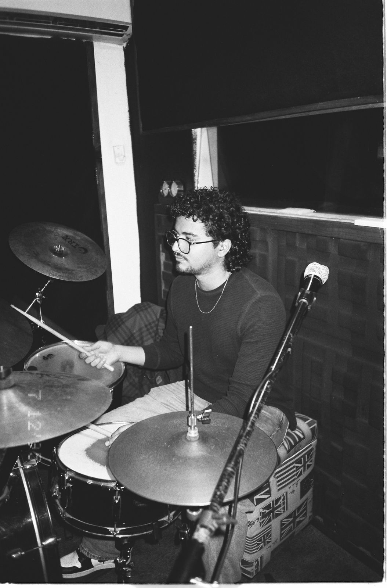
01 · About
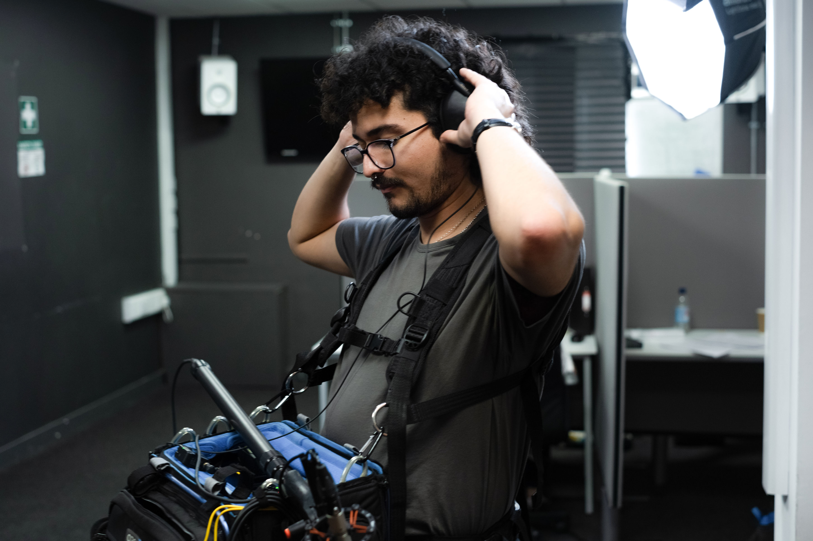
I work in sound for film and music: location recording, foley, dialogue editing and final mixing in Dolby Atmos.
I'm also a drummer and percussionist, and I shoot 35mm and medium format film. Based in London, collaborating with projects in the UK, Mexico and remotely.
02 · Film Audio
Location recording, dialogue editing, foley and final mix. Available for specific stages or to support the project through the entire sound process.
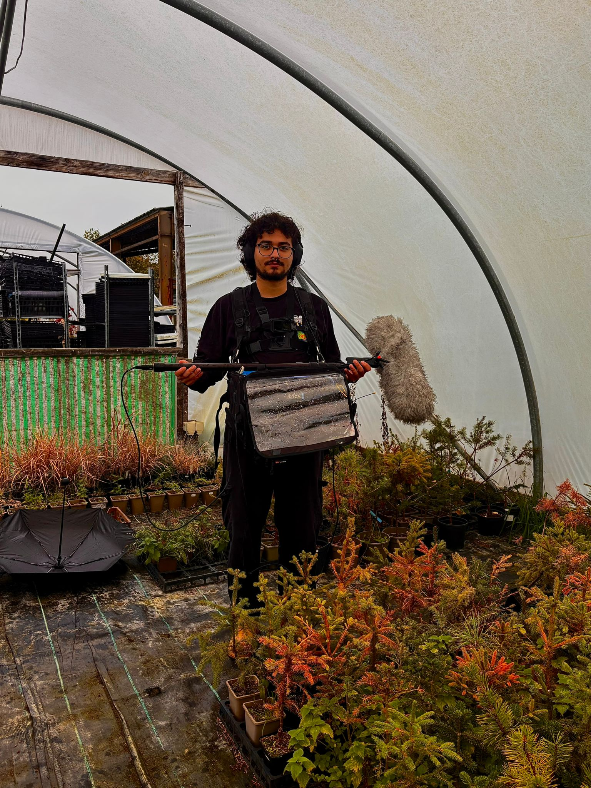
Production Sound
Location recording, boom, wireless lavs and on-set technical management.
Foley
Foley performance and recording: footsteps, cloth, props and object handling.
Dialogue Editing
Cleaning, sync and stem preparation for the final mix.
Re-recording Mixing
Final mix for cinema, OTT and digital distribution in multiple formats.
Dubbing Mixing
Dubbing and ADR mixing with tonal and spatial coherence with the image.
Full Audio Post
Complete supervision from shoot through to master delivery.
03 · Core Speciality
I mix in Dolby Atmos for music, film and immersive content. From converted stereo sessions to native 7.1.4 mixes, with delivery in ADM, IMF and streaming formats.
04 · Mix & Master
Stereo mixing and mastering for independent releases, artists and labels. Calibrated monitoring and quality control on every delivery.
Stereo Mix
Balance, dynamics, spatiality and tonal colour from demos to full albums.
Mastering
Preparation for Spotify, Apple Music, YouTube and physical distribution.
Stem Mixing
Greater control and flexibility. Ideal for alternate versions and licensing.
Collaborative Process
Every project includes an agreed round of revisions to fine-tune the mix with you before final delivery.
05 · Music
Session drummer and percussionist. I play in service of the song, with attention to arrangement, dynamics and space. Available for recordings and live performance.
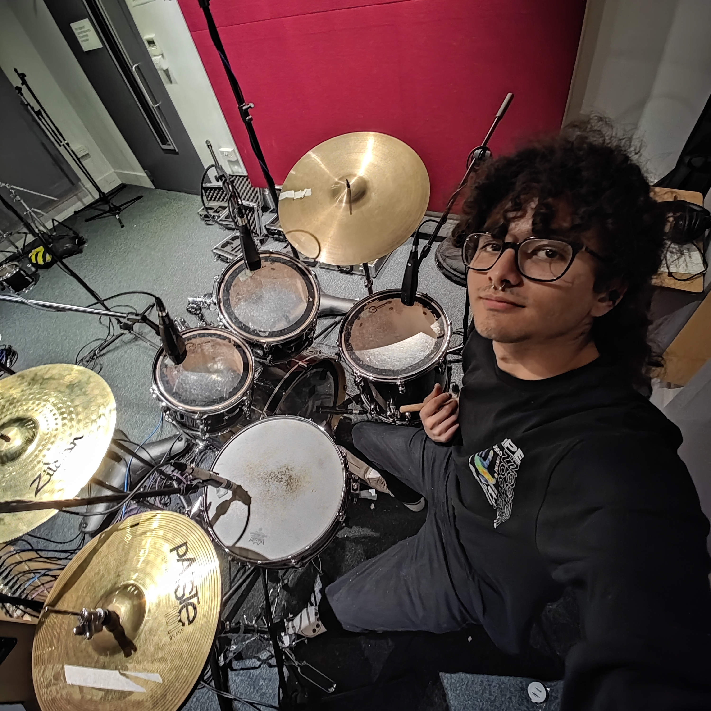
Drum Sessions
Rock, jazz, funk, latin, electronic. Chart reading and playing by ear.
Additional Percussion
Texture, colour and rhythm beyond the standard kit for productions that need it.
Collaborations
Open to long-term projects, bands and independent artists.
Audio + Music
As both a musician and an engineer, I can handle the recording process and deliver organised, mix-ready drum stems.
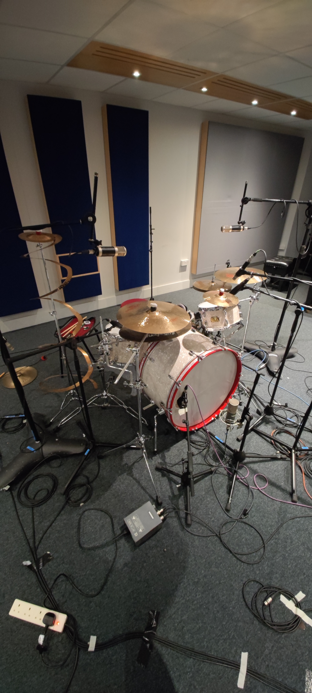
Booth · Drums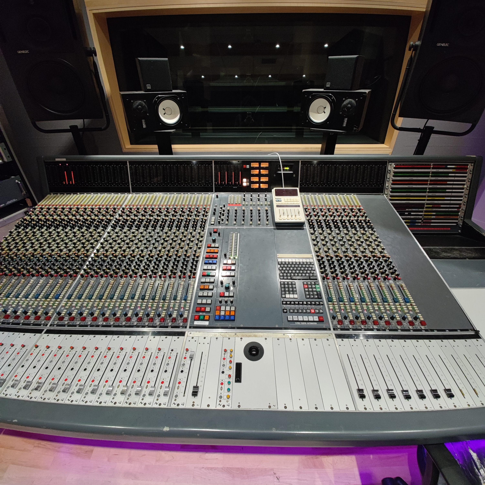
Control room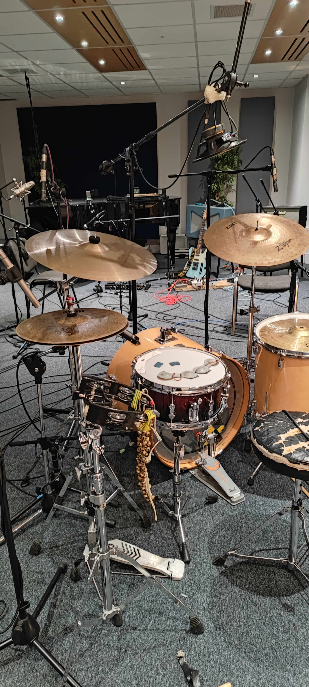
Session06 · Photography
Analogue photography as a personal practice, shot on 35mm and medium format across travel and everyday scenes.
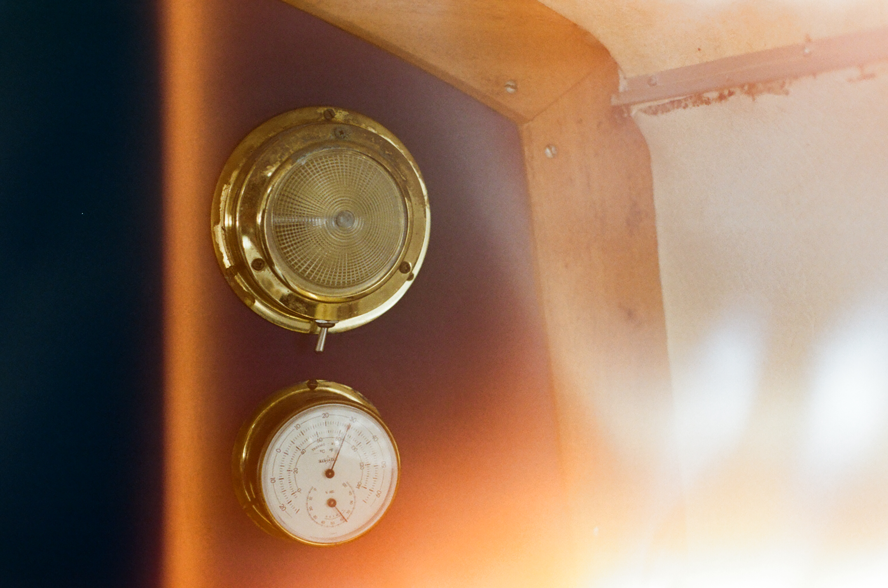
35mm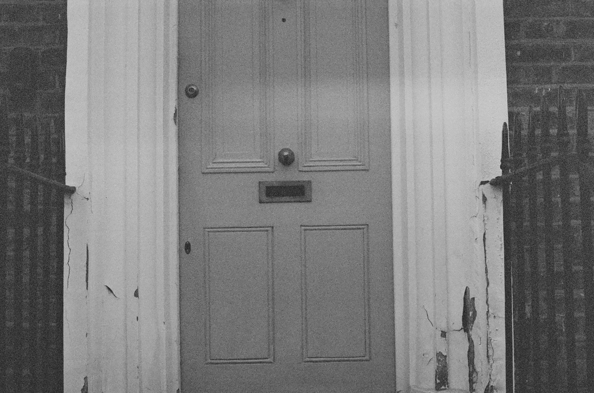
35mm · London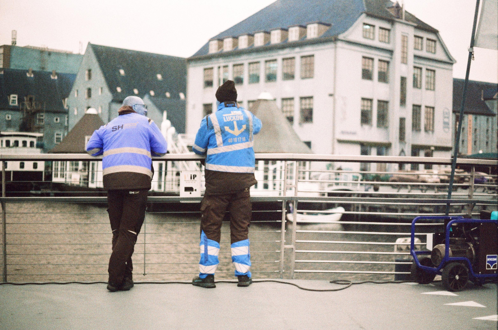
35mm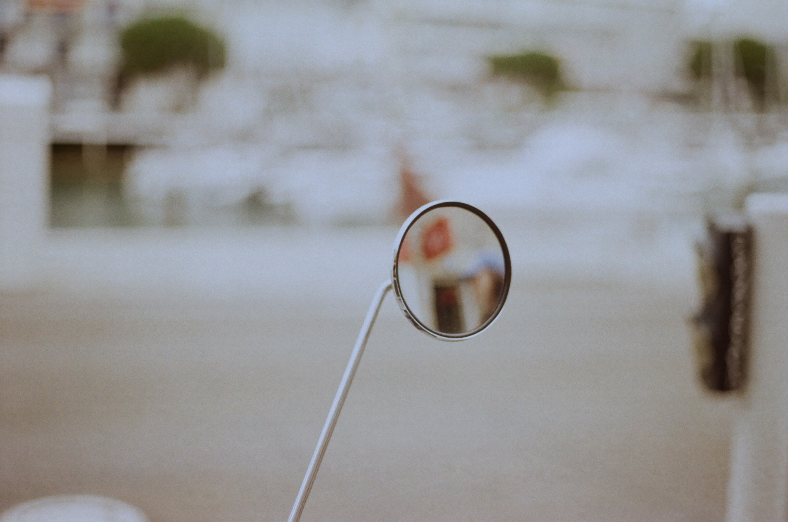
35mm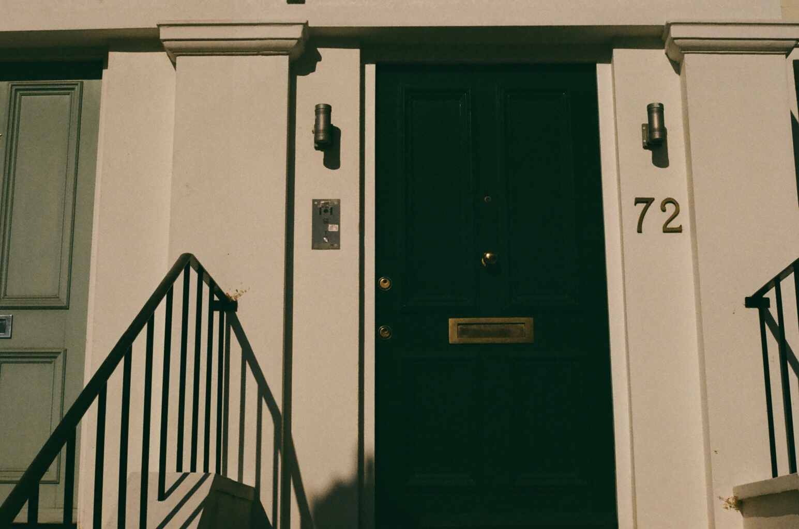
35mm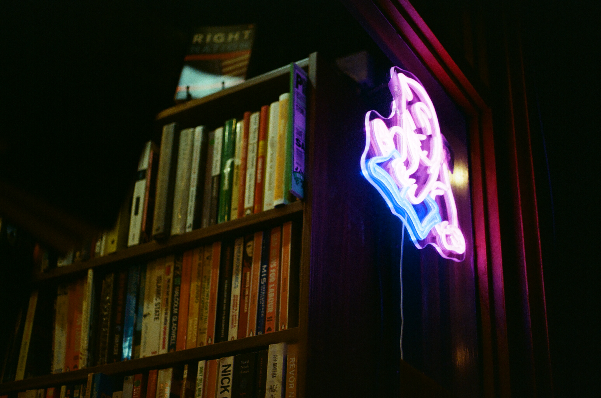
35mm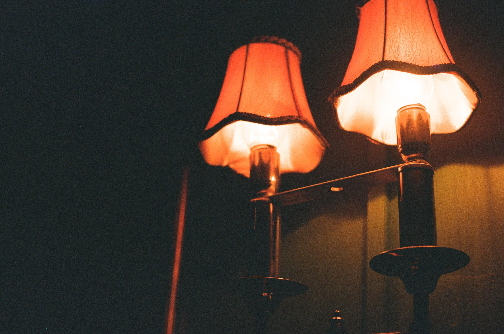
35mm↑ 35mm analogue: selection of rolls 2023–2025
08 · Contact
Based in London. Available for remote and international projects.
I respond in English and Spanish.